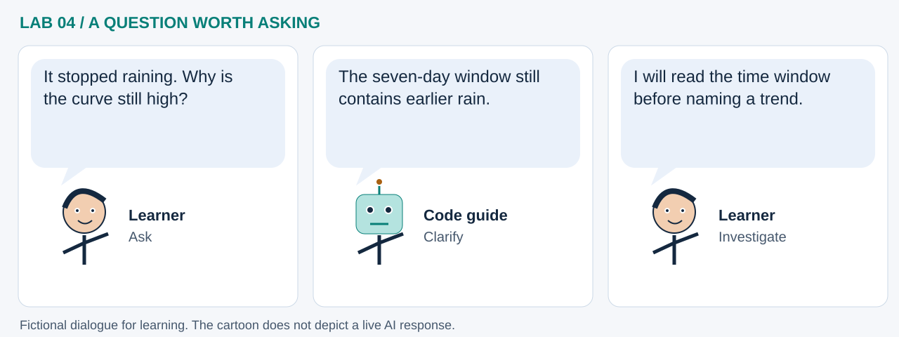

LAB 04 · 32-SECOND VISUAL WALKTHROUGH
A day is not a climate trend
What does accumulated rain reveal that a daily map cannot?
Silent, captioned storyboard. Use the player to pause, seek or change playback speed. On a small screen, use fullscreen or read the transcript below. The diagrams explain the method; they are not recordings of a live model run.
Download MP4 · Captions · Open infographic at full size

What runs here?
GeoLibre streams a real CHIRPS COG. A separate, clearly invented series is summed and plotted in Pyodide.
Feature preparation: streaming and rolling sums support a later GeoAI workflow; no anomaly model is fitted here.
Transcript and code landmarks
- 00–08s · View
Inspect one actual daily rainfall layer and its source date.
m.add_cog(CHIRPS, ...) - 08–16s · Practice
Use invented daily values to make the arithmetic easy to follow.
rain = np.array(...) - 16–24s · Accumulate
A trailing total combines seven consecutive days of rainfall.
np.convolve(rain, np.ones(7), ...) - 24–32s · Interpret
Align each total with its final day; a climate anomaly still needs a baseline.
days[6:]
The common misconception

Read the cartoon dialogue
- It stopped raining. Why is the curve still high?
- The seven-day window still contains earlier rain.
- I will read the time window before naming a trend.
Try explaining it
Why are there 24 complete seven-day windows in a 30-day series?
Check your reasoning
The first ends on day 7 and the last on day 30: 30 − 7 + 1 = 24.
Original educational illustrations and captions authored for this repository. See the notebook for data and software citations.